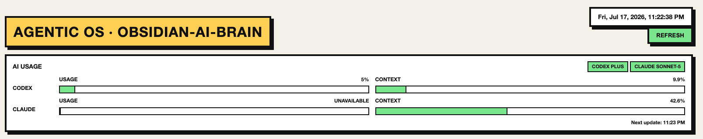
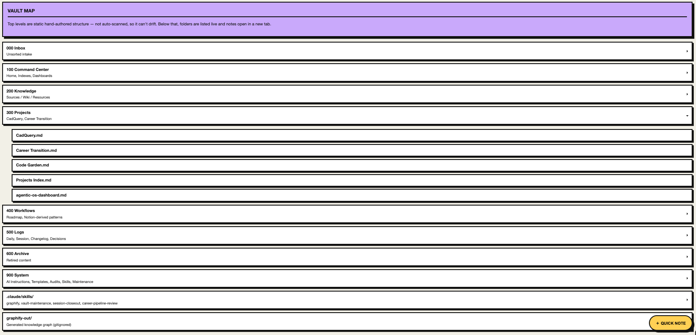
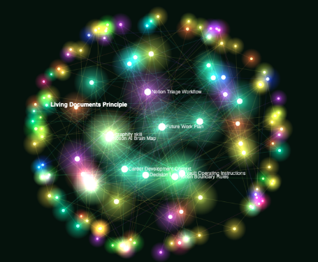
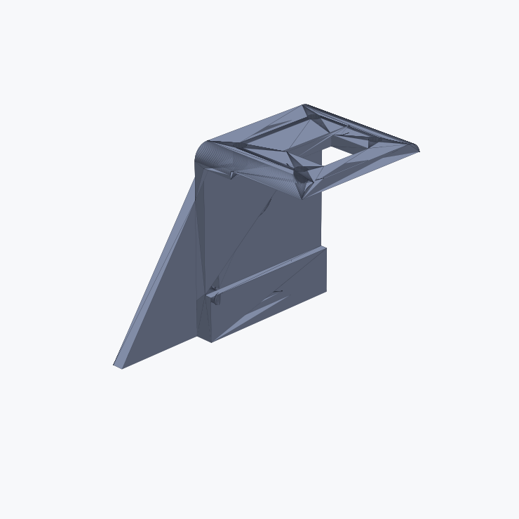
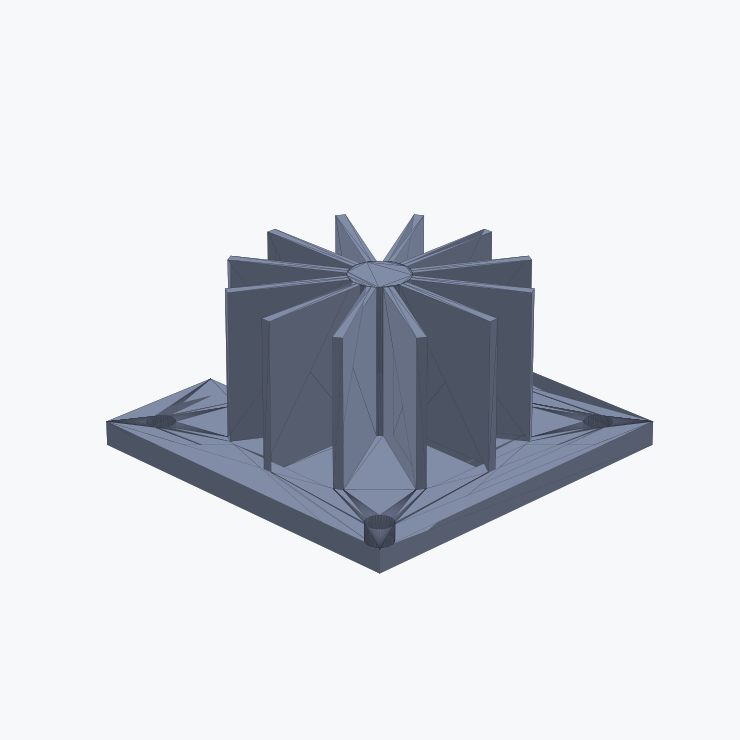
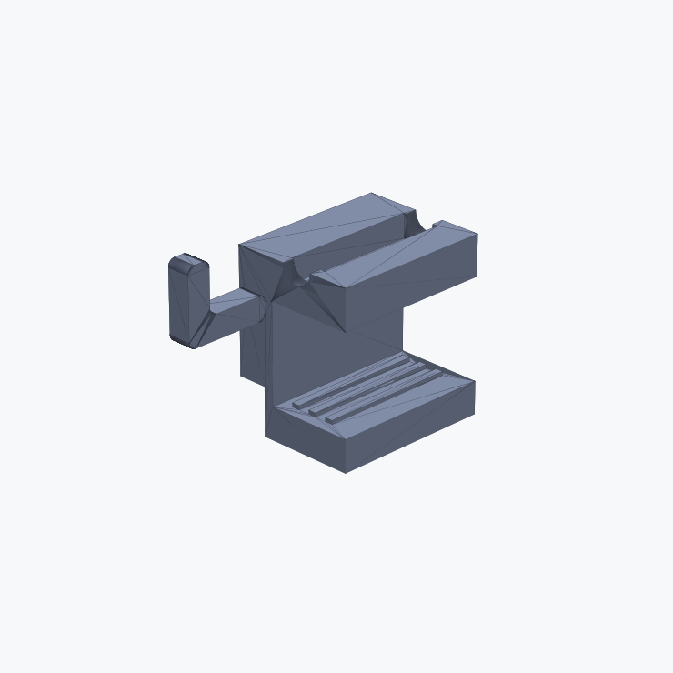
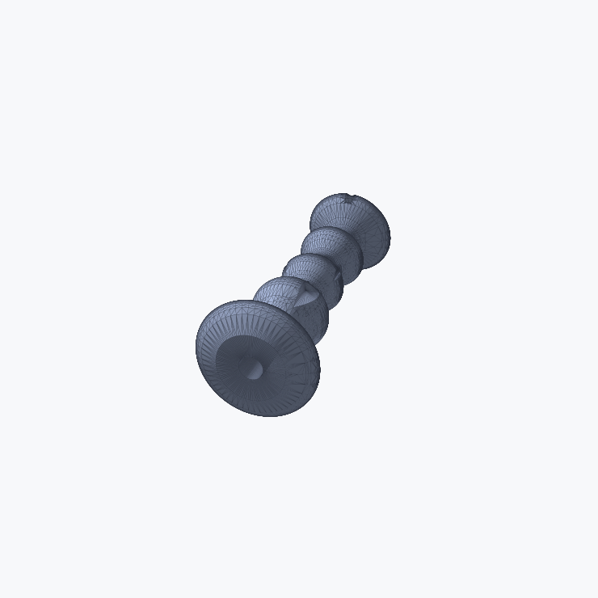
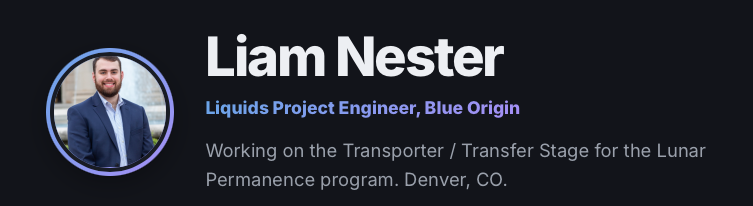

Projects
Projects
A portfolio of personal and side projects.
AI Projects
Skills & AI tools used across these projects



Agentic OS Dashboard + AI Brain
A local-only dashboard that visualizes real data pulled from my Obsidian vault, Notion, and Strava — nothing on it is fabricated; every field traces back to a real source or is explicitly marked as deferred. Underneath it is the Obsidian AI Brain itself: my primary durable AI knowledge and agent system, a plain-Markdown vault that stores context, decisions, and workflows, with AI agents (Claude Code, Codex) operating in it under explicit behavioral rules.
- Two tab groups: Productivity (To-Do, Notes, Overview, Activity Log, AI Brain graph, Vault Map, Skills) and Personal (Finance, Travel, Workout, House, Books)
- Reachable from my phone over Tailscale, no public exposure
- Allowlist-guarded skill-run endpoints and path-traversal-guarded file routes
- Numbered vault folder taxonomy: Inbox → Command Center → Knowledge → Projects → Workflows → Logs → Archive → System
- Self-auditing practice — e.g. a full line-by-line audit of 61 notes that caught and fixed real gaps
- Up next: driving CAD design generation (see CadQuery below) from the same dashboard




CadQuery
Parametric CAD scripting — building single-part mechanical designs with CadQuery's Python API, backed by a local reference manual for quick lookup while designing. Each project explores a different engineering problem: load paths, compliant mechanisms, thermal geometry, and ergonomics.
- Structural bracket, in three iterations: basic, manually optimized, and AI-assisted topology
- Multi-function one-piece desk clamp with integrated cable routing and grip features
- Heat sink variants comparing straight, radial, pin-fin, and branching fin patterns
- Ergonomic tool handle with finger-contour grip geometry, left and right variants
- STL/STEP export for printing and downstream tooling, iterated via the CQ-editor GUI
Code Garden
A living, playable ecosystem for understanding and tending codebases: functions are plants, dependencies are roots, test coverage is sunlight, bugs are pests, and dead code is decay. Built for the OpenAI Build Week Challenge 2026, Education track.
- Deterministic analysis engine parses a target repo into a typed HealthReport, then a pure projection maps it to a GardenScene
- GPT-5.6 narrates and explains the garden in plain English
- Codex performs real actions — removing dead code, writing missing tests — behind those explanations, making it a teaching tool as much as a dev tool
- Garden health only changes when a verified code change actually lands and analysis re-runs

This website
My personal site — a hand-built, static portfolio covering my background, experience, projects, and resume.
- Static HTML/CSS, no framework or build step
- Shared design system across pages: cards, pills, timeline, and section styling
- Deployed via GitHub Pages